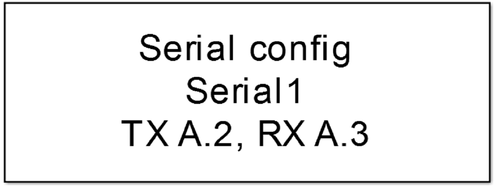
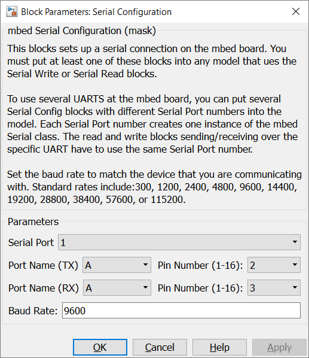
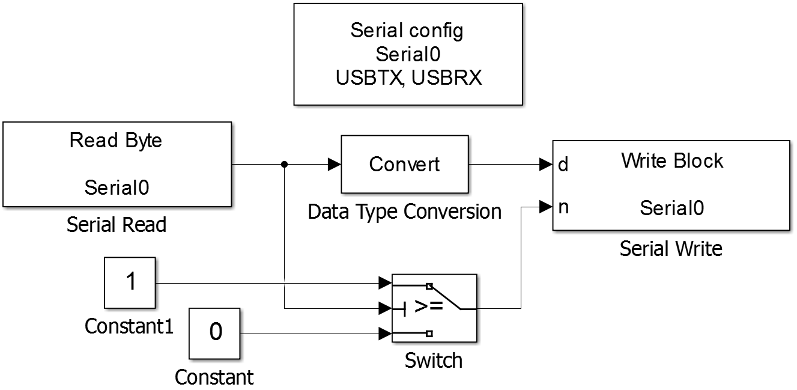

5.1.1. Serial Configuration
5.1.1.1. Description
This blocks sets up a serial connection on the mbed board. You must put at least one of these blocks into any model that ues the Serial Write or Serial Read blocks.
To use several UARTS at the mbed board, you can put several Serial Config blocks with different Serial Port numbers into the model. Each Serial Port number creates one instance of the mbed Serial class. The read and write blocks sending/receiving over the specific UART have to use the same Serial Port number.
Set the baud rate to match the device that you are communicating with. Standard rates include:300, 1200, 2400, 4800, 9600, 14400, 19200, 28800, 38400, 57600, or 115200.
{kind=link}
5.1.1.2. Parameters Dialog Box
Serial Port
specifies an internal used serial port number. It is used to generate unique instance names when more UARTs are used in the same model and to tie config, read and write blocks together.
Port Name/Pin Number (TX)
specify the UART transmit mcu pin. This block supports the naming schema: ‘P’ + letter ‘A’, ‘B’, ‘C’, … + ‘_’ + number ‘0’, ‘1’, … ‘15’, e.g. PA_0.
Port Name/Pin Number (RX)
specify the UART receive mcu pin. This block supports the naming schema: ‘P’ + letter ‘A’, ‘B’, ‘C’, … + ‘_’ + number ‘0’, ‘1’, … ‘15’, e.g. PA_0.
Baud Rate
specifies the UART baud rate.
5.1.1.3. Example
In the example data from UART input are written back to the output of the same UART. Because the Read Block writes in every step function call a byte to the output port, the value has to be checked. When no byte was transmitted a -1 is written. The switch block handles this, to avoid writing 0xff characters t the UART output.
{kind=link}
5.1.1.4. Code Generation
Instance names of mbed classes are created by concatenating model name (, submodelnames), block name and Serial Port number (<Model Name>_(<Subblock Name>_…)<Block Name><Serial Port>). Space and minus characters are substituted by underscore (‘_’) characters.
Global parts
creates a global instance
Serial <instance name>(P<Port Name>_<Pin Number>, P<Port Name>_<Pin Number>);
Initialization Function
and a line in void <Model Name>_initialize(void) function
<instance name>.baud(<Baud Rate>);
in <Model Name>.cpp.